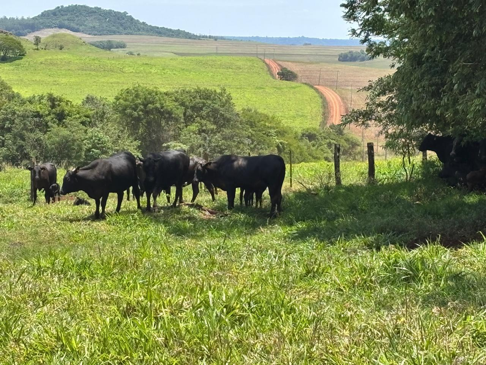
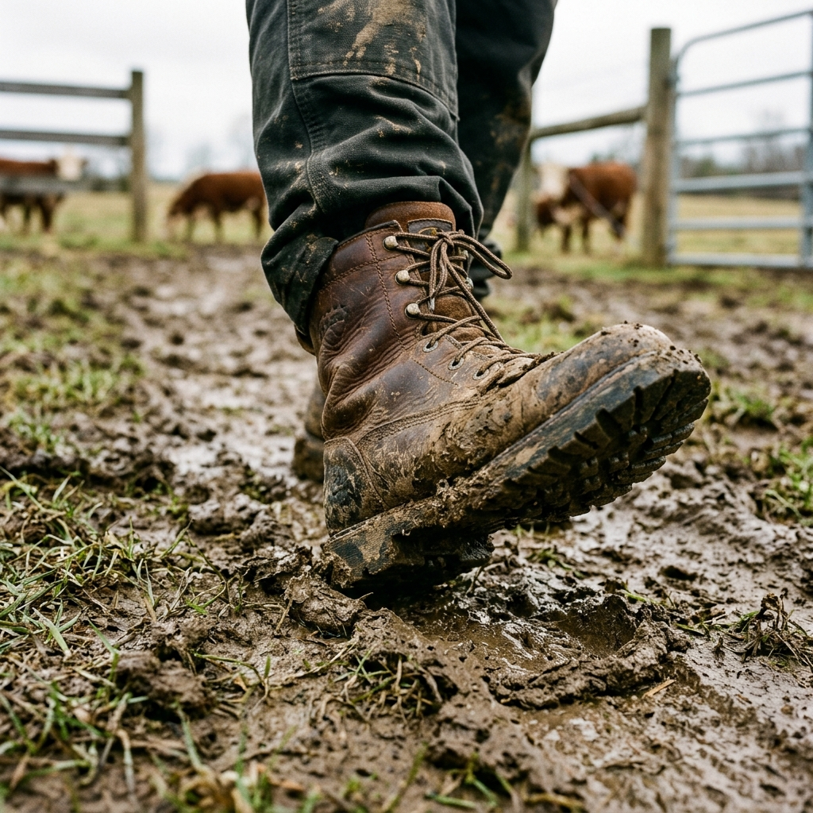
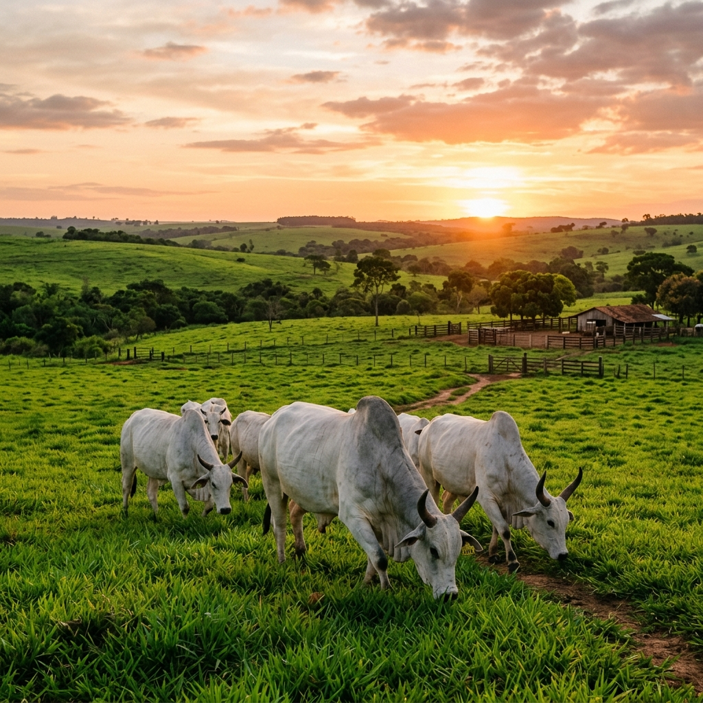
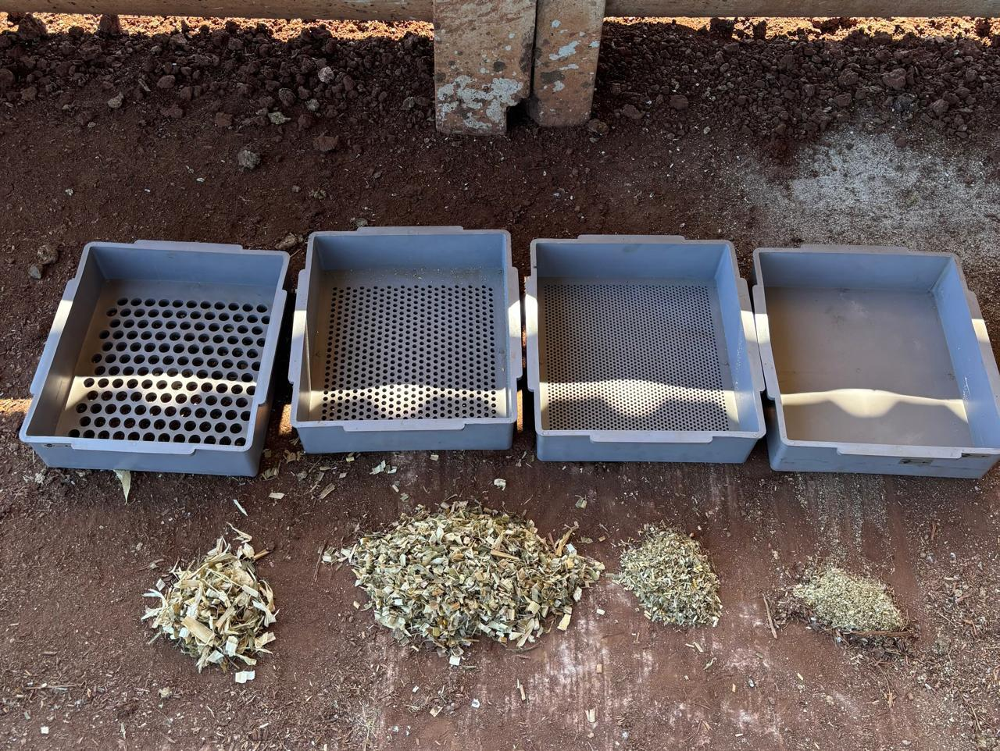
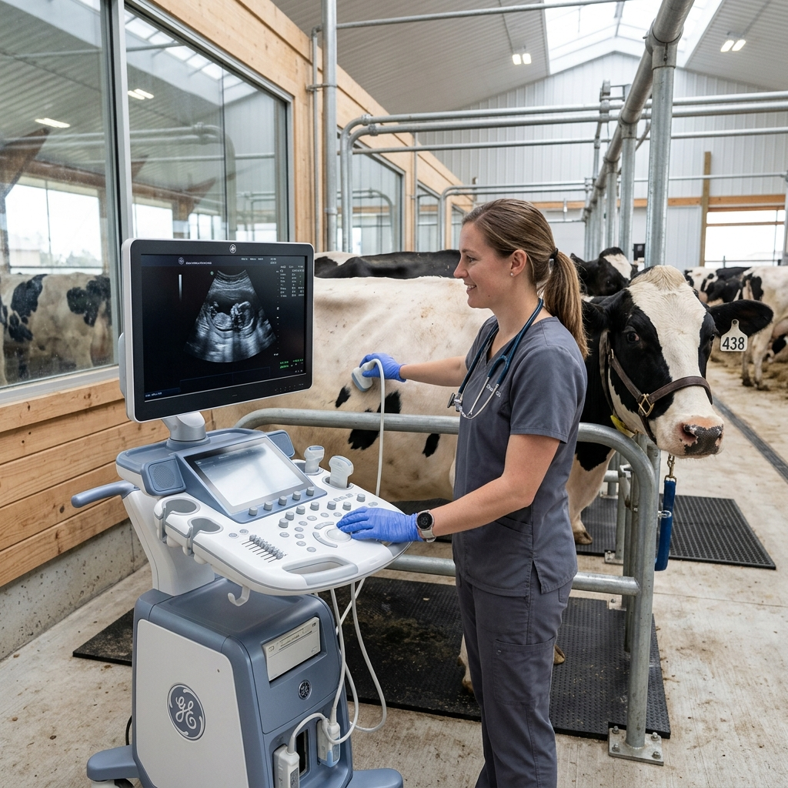
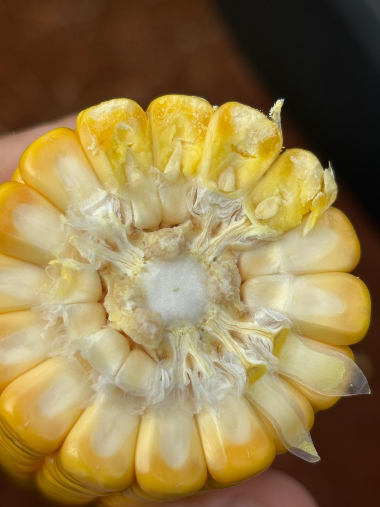

Eu ajudo você a extrair a máxima rentabilidade da sua fazenda
Trabalho com projetos completos de manejo onde o foco é um só: lucro real através de índices produtivos e reprodutivos de excelência.
22
Anos no Trecho
Prazer, eu sou o Kiko.
Médico Veterinário, fundador da KS Representações e apaixonado pelo resultado no campo.
Eu conheço a realidade da sua porteira
No meu dia a dia no campo, vejo propriedades com potencial incrível perdendo dinheiro por detalhes que podem ser corrigidos com técnica e gestão.
Insegurança na Entrega
"Será que o investimento em nutrição vai realmente se pagar no final do ciclo?" Eu trabalho com dados para responder isso.
Baixo Desempenho
Animais que não ganham peso ou baixos índices de prenhez. Se o índice não sobe, o lucro não aparece. Ponto.
O Custo que Dói
A sensação de que o serviço custa caro sem ver o retorno. Eu transformo esse custo em investimento mensurável.
Eu não vendo produtos, eu entrego um projeto de fazenda
Meu acompanhamento é individualizado porque entendo que cada propriedade é um ecossistema único. Eu entro na sua fazenda para diagnosticar e implementar um projeto que integra:
Manejo Nutricional Estratégico
Dietas formuladas para o seu rebanho e sua disponibilidade de matéria-prima.
Foco Total em Reprodução e Sanidade
Protocolos modernos para elevar a taxa de desmame e encurtar ciclos.
Gestão de Rentabilidade
Definição de metas claras. Se não pudermos medir, não podemos melhorar.

Minha Trajetória é a sua Segurança
Não sou um consultor de escritório. Eu construí minha autoridade no barro, acompanhando ciclos e safras há mais de duas décadas.
O Começo de Tudo
Início da jornada na assistência veterinária em grupos familiares. Foi onde aprendi que o gado responde ao cuidado e a fazenda responde à gestão.

Fundação da KS Representações
Um passo decisivo para representar o que há de melhor no mercado: a marca Tortuga® em Campo Mourão e mais 11 municípios da região.
Parceria com a COAMO
Assessoria técnica direta para cooperados da maior cooperativa do país.
22 Anos de Campo
Mais de duas décadas somadas de vivência prática. Hoje, meu foco é usar toda essa base para desenhar o seu projeto de sucesso.
Base Técnica
Aperfeiçoamento em Reprodução de Bovinos
Registro
CRMV-PR Ativo
Onde eu coloco a mão na massa

Dietas e Nutrição
Acompanhamento de matérias-primas e programas nutricionais de alta biodisponibilidade.

Ciclo Reprodutivo
Protocolos focados em elevar os índices de concepção e saúde do plantel.

Sanidade e Lab
Exames andrológicos, Brucelose e Tuberculose com agilidade e precisão técnica.
Metas e Lucro
Definimos objetivos financeiros e produtivos claros para cada etapa do projeto.
"Não existem duas fazendas iguais no Brasil. O meu foco é transformar tecnologia de ponta em resultado real para o seu cenário."
Eu garanto o melhor suporte técnico unindo as marcas COAMO e Tortuga® ao atendimento que o produtor merece: o individualizado.
O que você ganha com o meu acompanhamento
-
Custo-Benefício Real
Uso de produtos com maior biodisponibilidade, reduzindo desperdício e maximizando ganho.
-
Salto em Índices Reprodutivos
Melhoria direta nas taxas de prenhez e desmame através de manejo técnico.
Caso de Sucesso (Placeholder)
"O trabalho do Kiko mudou nossa visão sobre suplementação. O retorno veio em arrobas e em tranquilidade no manejo."
— Fazenda da Região
Direto ao Ponto
"Vou ter bons resultados mesmo?"
Sim. Meu trabalho é baseado em metas reais. Se o projeto for seguido, o resultado aparece no balanço da fazenda.
"Consultoria não é um custo alto?"
O custo real é o gado que não ganha peso ou a vaca que não emprenha. Meu acompanhamento se paga através da eficiência que geramos.
"Eu coloco meu nome e meus 22 anos de história em cada fazenda que atendo. Minha entrega é o meu compromisso pessoal com você."
— Kiko
Proximidade é Diferencial
Moro e trabalho na região. Tenho escritório e laboratório próprio para exames de Brucelose, Tuberculose e Andrológicos, o que garante rapidez para o seu manejo.
Também atendo projetos específicos no Mato Grosso e Mato Grosso do Sul.
Vamos agendar uma visita
na sua fazenda?
Clique abaixo para falar diretamente comigo no WhatsApp e darmos o primeiro passo no seu projeto de rentabilidade.
Entrar em contato no WhatsAppResposta rápida garantida pelo consultor